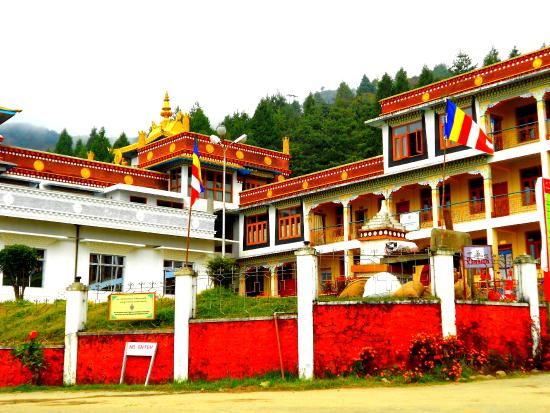
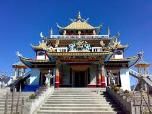
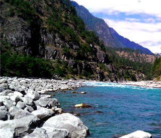

Arunachal Pradesh
Arunachal Pradesh
Home to picturesque mountains, unexplored passes, tranquil lakes and famous monasteries, Arunachal Pradesh is an amazing destination for an amazing holiday. Arunachal Pradesh is the perfect state for you if you wish to explore the tribal culture and the simplicity of their exquisite beauty. Its amazing array of flora and fauna, in a unique habitat with glaciers, high altitude meadows and sub-tropical forests add to the charm of the beautiful state.
It is also known as the Orchid State of India or the Paradise of the Botanists. More than 500 species of birds have been recorded to be found in this state, many of which are highly endangered and restricted to this state. Most of Arunachal Pradesh is mountainous which look serene during winters when snowfall covers their peaks while flora and fauna make the state a peaceful state to be in. The crafty, traditional people of the state with a smile on their rigid faces welcome one and all with love and warmth.
Sessa

Sessa Orchid Sanctuary is a 100 km2 protected area of India in the Himalayan foothills in Bhalukpong Forest Division of West Kameng District, Arunachal Pradesh. It conjoins Eaglenest Wildlife Sanctuary to the southwest. It is a part of the Kameng Protected Area Complex (KPAC), which is an Elephant Reserve.essa and Eaglenest together occupy a rough east-west rectangle with Sessa occupying the north-east quadrant. The Bhalukpong-Bomdila highway (and Pakke immediately beyond) are its eastern boundary. It is bounded to the north by the Tenga River valley. Altitude is 900 metres (2,953 ft) to 3,250 metres (10,663 ft). Sessa and Eaglenest ridges rise to 3,250 metres (10,663 ft) and 2,700 metres (8,858 ft) respectively and are the first major barriers to the monsoon as it moves north from the plains of Assam. These ridges get over 3,000 millimetres (120 in) of rain on the southern slopes and about 1,500 millimetres (59 in) on the northern slopes. Sessa sanctuary is drained by the Tippi Naala (Tippi river) which joins the Kameng river at Tippi village on the Bhalukpong-Bomdila highway.
Sessa is part of the Kameng protected area complex (KPAC), the largest contiguous closed-canopy forest tract of Arunachal Pradesh, which includes Sessa, Eaglenest, Pakke, Nameri, and Sonai Rupai sanctuaries and associated reserved forest blocks. The Complex covers 3500 km2 in area and ranges from 100 metres (328 ft) to 3,300 metres (10,827 ft) 3300m in altitude. Sessa is in an area under claim of Chinese sovereignty, in the jurisdiction of Cuona County of Shannan Prefecture of the Tibet Autonomous Region.
Bomdila Monastery

Bomdila is located at 27.25∞N 92.4∞E. It has an average elevation of 2217 metres (7273 feet). It is 109 km from Bhalukpong and is the headquarters of West Kameng District. The place is inhabited by tribes like Aka (Hrusso), Miji (Sajalong), Monpa, Sherdukpen, and Khawas. The craft centers, monasteries, ethnographic museum and emporium etc. are worth visiting. One can also watch various snow clad mountain peaks from Bomdila including the Kangto and Gorichen Peaks which are the highest peak of the state. With snow clad Himalayan mountain ranges and lush greenery to flaunt its natural beauty and various crafts to boast of its rich culture and lifestyle, Bomdila ranks amongst the leading tourist destinations in Arunachal Pradesh. Bomdila is a photographerís delight, as the snow-capped mountain ranges of Himalayas offer spectacular views. To enjoy the essence of nature in its varied forms, you could not think of a better place than Bomdila.
Chilipam

The beautiful Chilipam monastery is on a hillock near to the Rupa town. You have to take a deviation from Rupa to go up the hill to visit this picturesque monastery on top of the hillock. The view from the hill top especially during the sunset is so amazing. Many travellers tend to skip Chilipam monastery considering they are visiting the Tawang monastery which is quite more famous. But the natural beauty of this monastery is not to be missed if you are travelling in this region especially because of the breathtaking view from the hillock where monastery is located. The serenity of this monastery with very less people around makes it so much enjoyable and relaxes your mind.
Bhalukpong

Bhalukpong is a small town located along the southern reaches of the Himalayas in West Kameng district of Arunachal Pradesh in India. The town is located at 213m above sea level, 100 km from Bomdila, 52 km from Tezpur and 5 km from Tipi. It lies along the Kameng river and is the headquarters of Bhalukpong circle. A road leads to Bomdila via the Tipi Orchidariurm, and the inner line check post is located at Bhalukpong.
Bhalukpong lies on the banks of the mighty Kameng river and borders along the dense forests that form the periphery of the Pakhui Game Sanctuary. Bhalukpong is a gateway to popular destinations like Tawang and Bomdila, but it has its own special charm too. It is a favorite picnic spot and people from nearby areas of Assam and Arunachal Pradesh congregate here every year in hordes to emjoy picnics. Fish angling and river rafting are the other principal tourist activities in Bhalukpong. Tourist attractions in Bhalukpong include the Pakhui Game Sanctuary and Tipi Orchidariurm, which hosts over 2600 cultivated orchids from 80 different species.